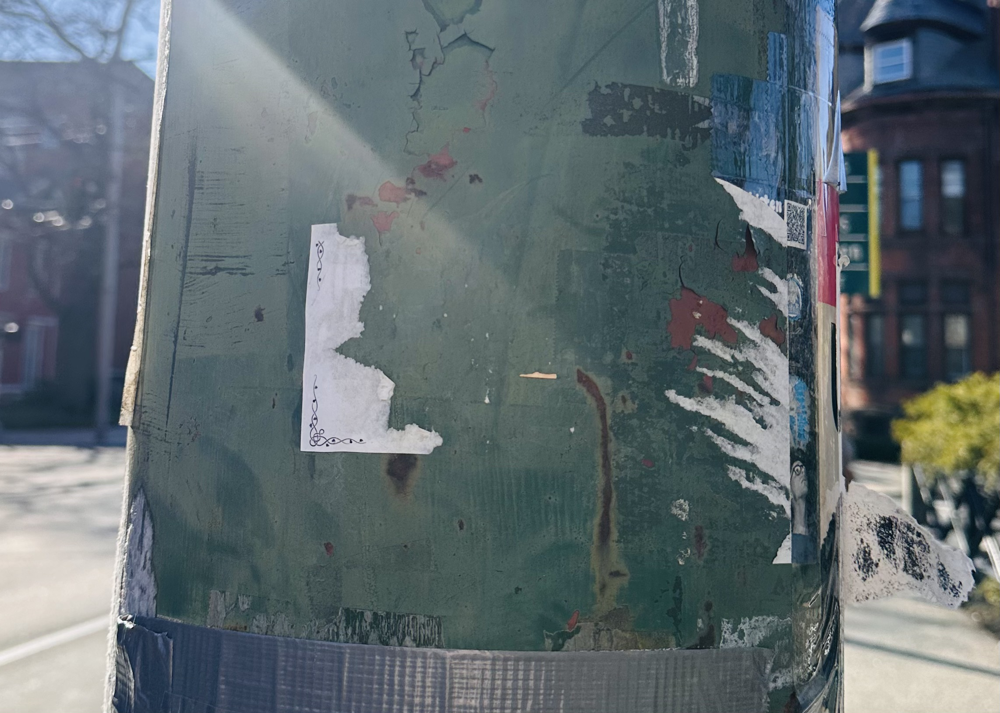
A trail of 250 stickers, five-dollar candles,
and a parking lot in Branford, CT.
By Emma Slagle
APRIL 21, 2026
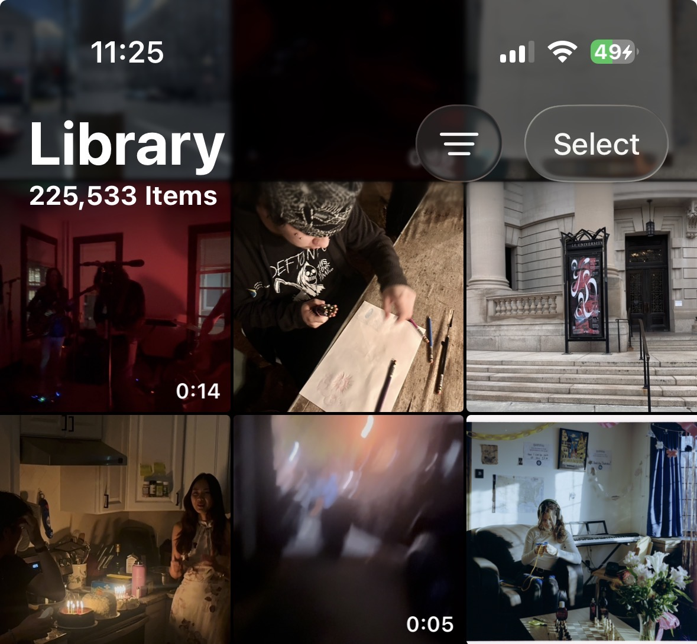
I'm someone that takes a lot of photos, and I mean a lot.
Most are of things others might just walk past, brushing them off as peculiar— like a sculpture of a crouching body with a giant tongue for a torso, planted on a pier sidewalk in East Boston.
Or a wall decal inside a stall of the women's bathroom in the Yale School of Art, narrating the potential experiences one might have while relieving oneself.
Or this cry for help disguised in the form of a flyer calling for small teacups...
I take note of these things, I document them, and I have since first getting a phone in the 6th grade (hence the 200,000+ image camera roll).
It was only natural, then, that I finally snapped a photo of my first “Doug B Candles” sticker this past fall, walking down a street in East Rock.
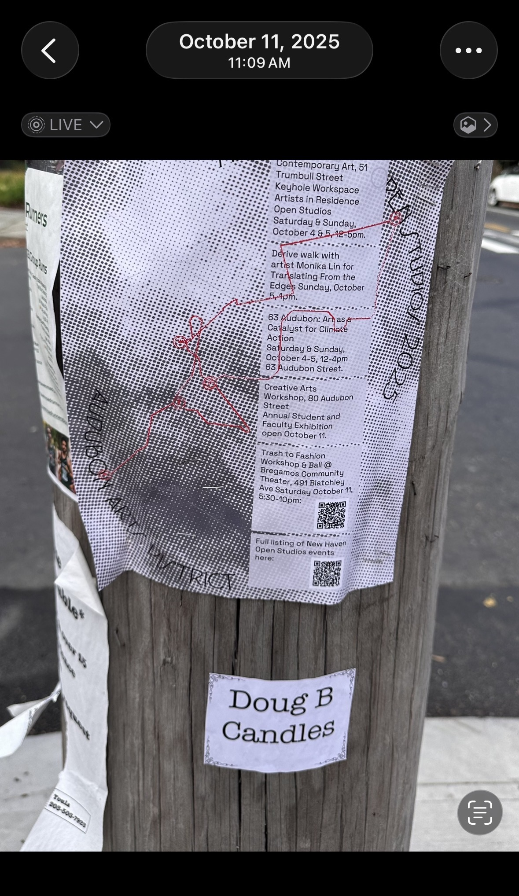
No website, no phone number, no QR code— just a name, a product, and an immense air of intrigue. In 2026, how does someone sell anything this way?
I wondered: Who is Doug B?
After taking the photo, I just kept noticing these stickers, more intensely than before, and more than I could ignore. I needed to find Doug B, and the first step lay in navigating and narrowing down his territory. How many stickers were there, and could they lead me to Doug himself? I enlisted my friend Cade to traverse the city with me to find out.
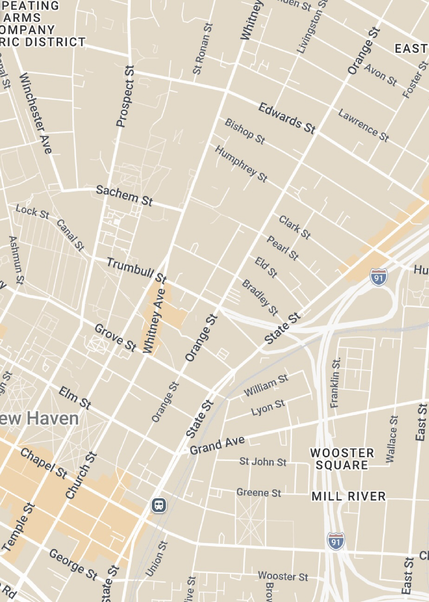
We started at the corner of Prospect and Sachem Street and found our first Doug B sticker within minutes on a parking pole.
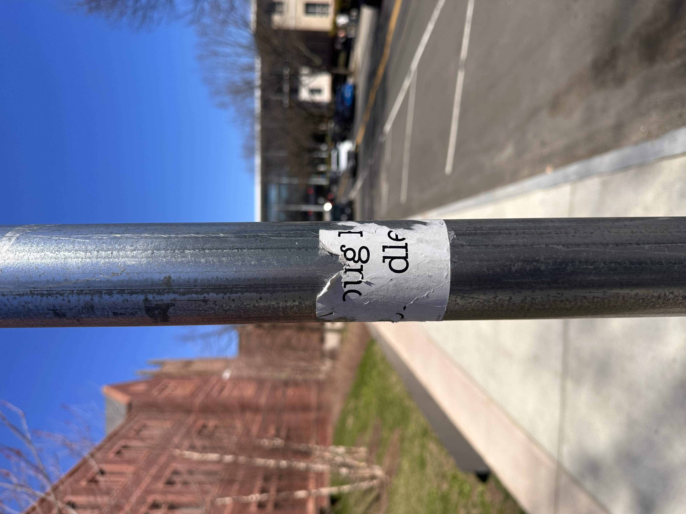
As we continued to walk north, the numbers only bloomed.
Some stickers even appeared in tight groups, right next to one another, almost impossible to miss.
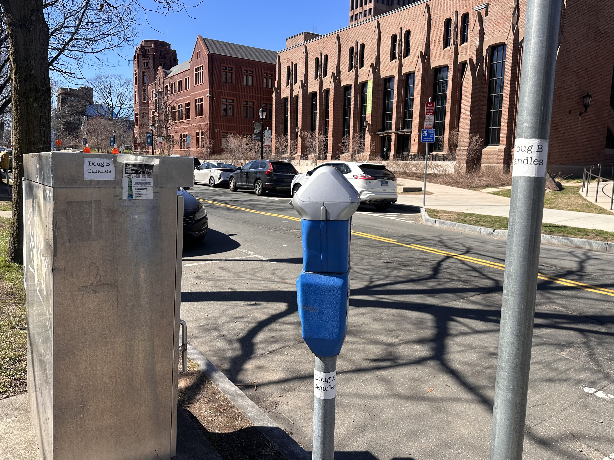
Most of the stickers were legible, but on State Street they were different— peeled at the corners, faded, some torn down the middle. Many were almost gone, just residue left behind. We didn't know if someone had been removing them, or if they were just older than the rest. Either way, State Street felt like the edge of something.
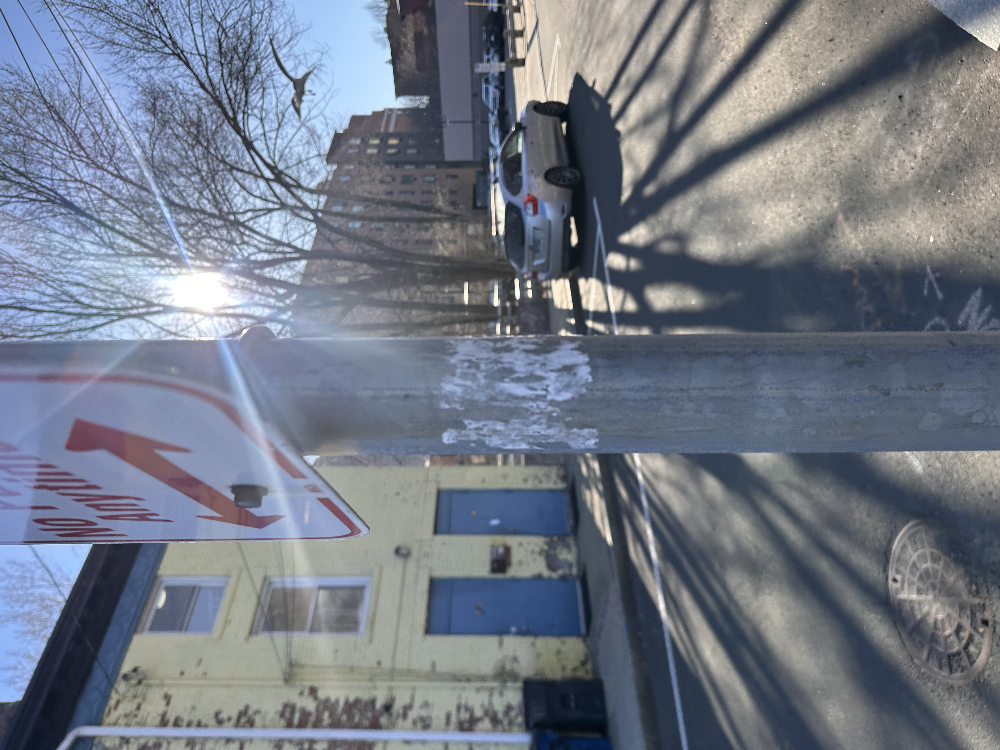
Making our way further south, the numbers continued to multiply: on lampposts, telephone poles, electrical boxes, on the sides of crosswalk buttons, and just when we thought it couldn't get any more populated, we encountered the Court Street bridge. Every railing. One after another, all the way across, on both sides, filled with Doug B stickers.
By the end of the walk, we had counted 250. East Rock, Little Italy, Wooster. In just about three and a half hours, 250 stickers along a single afternoon's path. We found Doug B territory, but still no Doug B.
I asked more than 30 friends, colleagues, and New Haven locals. Only two had ever really noticed the sticker. Nobody knew who Doug B Candles was.
I turned to the internet to find out more, and discovered I wasn't the only one there curious about Doug B. Scattered across Reddit and Facebook, strangers had been quietly marveling at him for years.
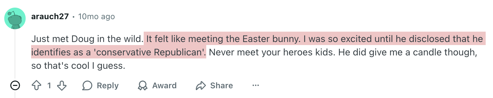
Even on the forums, Doug had already become something mythical. One user compared him to the Easter Bunny. Another warned, "important: if you are a democrat or liberal, keep it a secret or he will go crazy."
Buried in the same Reddit thread was my first clue, rumoring he frequents Willoughby's, a coffee shop in Branford.
So I called Willoughby's. They knew who he was, but he didn't sell there, and they weren't even sure if he was still active. They suggested I try calling Common Grounds.
Common Grounds claimed they had never heard of him— it was a short conversation. They hung up, and I was back at square one.
Another Facebook post mentioned that his candles were sold at Nuzzo's Farm, a wedding venue. I called, and they knew him, but emphasized they had no affiliation. Another dead end, and by this point, I could feel there was something nobody was telling me, a story or moment about our guy I just wasn't privy to yet.
The last rumor was the most specific: someone on Facebook had posted that Doug hangs around the Branford Stop & Shop around 9 p.m. I called the store, and they transferred me to the manager. She told me he was well known around there, but she just couldn't explain why. "You could try calling the Branford police for more information," she said.
I did not call the Branford police.
At last, on a Facebook forum, I found my most essential clue: Doug's number.
So I called. No answer. I called again. Still nothing. Then, less than a minute later, my phone rang.
He called back the next day. We confirmed a cash-only 5 p.m. pickup at Nonna Gina's, the day after that.
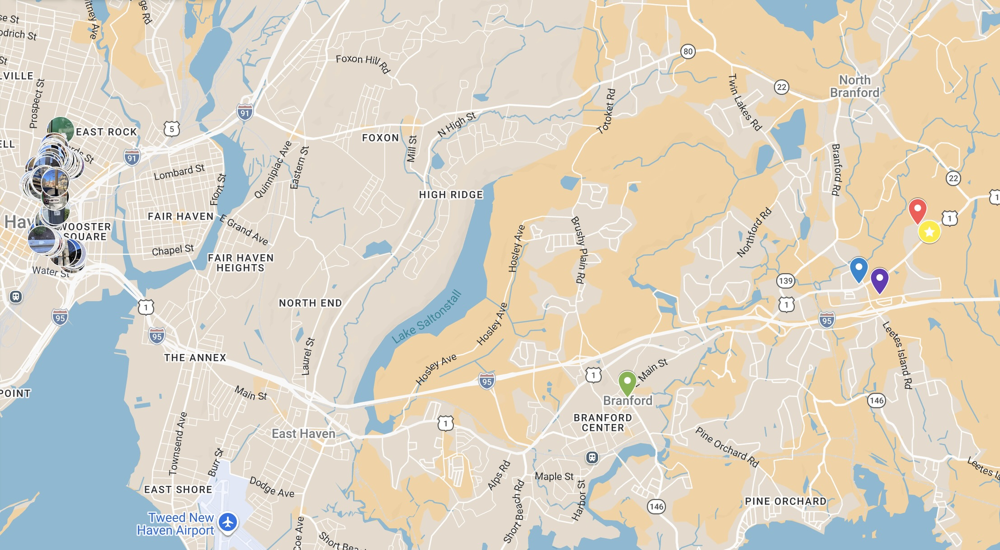
I brought Cade, along with our friend Kristjan to drive us out. Five p.m., Thursday, Nonna Gina's parking lot, right across from the Branford town dump, right on time, and exactly where he said it would be. Doug was already there when we pulled in.
He was wearing Doug B head to toe— a "Doug B Candles" branded hat and t-shirt, both with that same typewriter font I'd been following around New Haven for months, and even his jeans were marked "Doug B" in Sharpie.
We learned Doug B was an ex-trucker turned candle man, and ended up standing in the parking lot for almost thirty minutes talking with him about 80s music, The Cure, The Smiths, Culture Club, and his immense passion for all of it.
I asked him how the stickers got everywhere, and how he'd managed it. He wouldn't say. "I don't know, little minions. I don't disclose the secret," he told me. He went on, "if you know the name, you really don't need anything else. Because what it does, it makes you curious: 'who is this Doug B Candles guy?'"
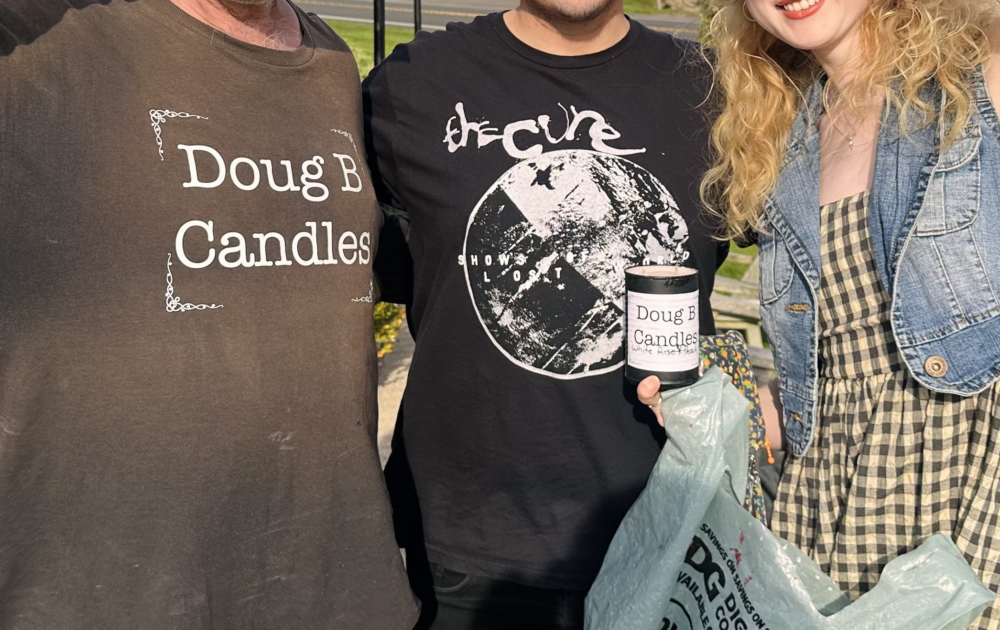
My white rose and peach candle. It smells like sweet, jammy heaven, and cost me just five dollars.
In an era where every small business has an Instagram, what does it mean when a guy can build a brand this way— through analogue marketing, stickers, with almost no information attached? Welcome to the conclusion: the territory of Doug B Candles.
Doug B sells handmade, affordable candles out of a parking lot in Branford, CT. His stickers are everywhere in New Haven, with at least 250 of them along a single afternoon's walk. Doug has built a local legend the old way: one sticker at a time, hiding in plain sight, spreading mostly word of mouth.
More than the stickers though, I think it's Doug himself that draws people in, meeting up in Nonna Gina's parking lot, wearing his own branded merch, trusting strangers to lean into their curiosity and call.
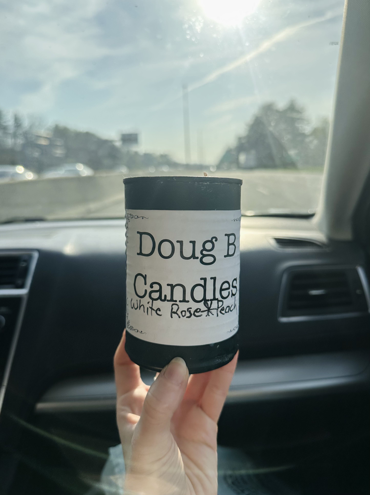
In the plastic bag with my candle was a flyer from Doug B. He told me to "spread the word," so if you'd like your own, here it is. You can tell him Emma sent you.
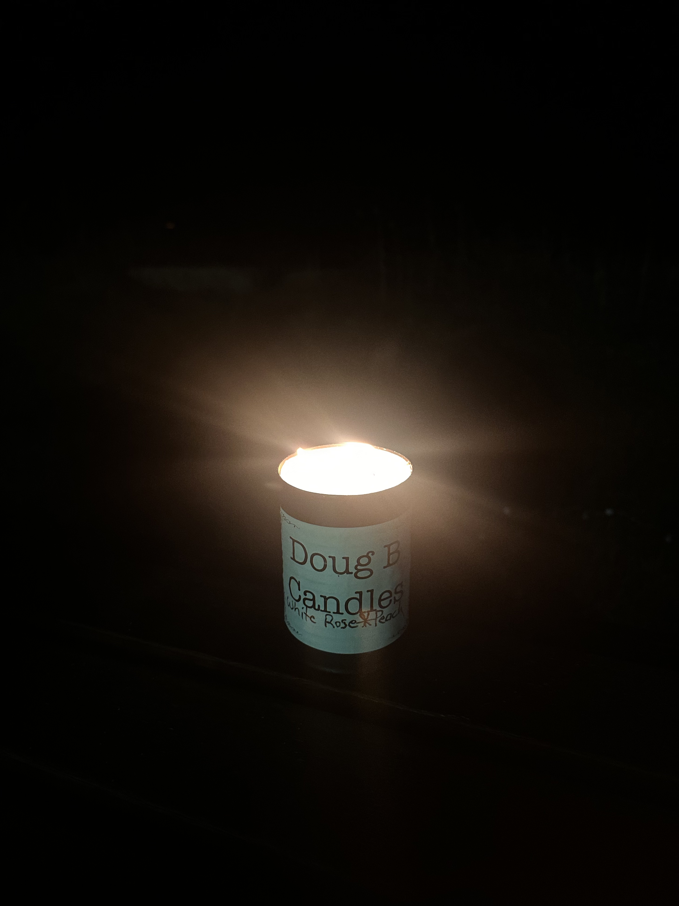
Map bases provided by Google My Maps.
All images, videos, and screenshots are my own. A few sections of the code were refined with assistance from Claude (Anthropic).
Special thanks to Professor Aaron Reiss for conferencing with me for this project and for teaching "Telling Stories With Maps" at Yale :);
Tajrian Khan, whose Unit 2 work served as inspiration for portions of this project;
Cade and Kristjan, for the 3.5-hour walk and the drive to Branford; and Doug B himself, for making my new favorite candle, and for sending his minions to introduce me to him.